Lấy cảm hứng từ cách pha
CÀ PHÊ PHIN TRUYỀN THỐNG ĐỘC ĐÁO
Nếu phải vẽ một bức tranh về văn hóa ẩm thực của người Việt, trong bức tranh ấy hẳn phải có một ly cà phê Phin. Trên thế giới hiện có rất nhiều loại máy pha cà phê, nhưng chưa có máy nào có thể pha được một ly cà phê đậm ngon đúng chất pha phin kiểu Việt.
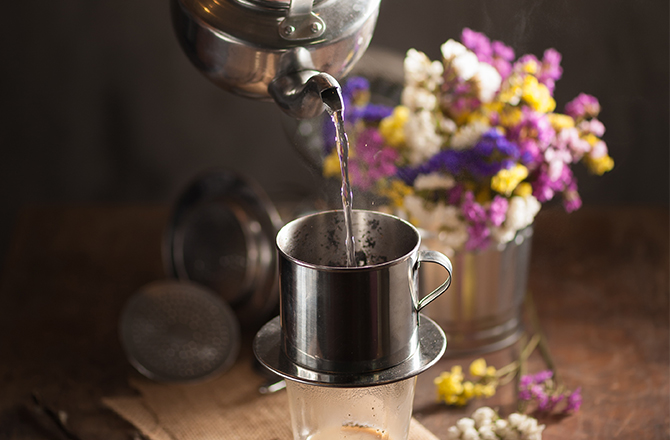
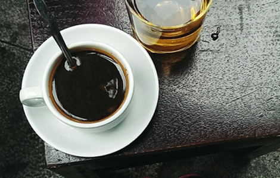
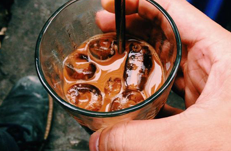
Khám phá
thêm
thêm
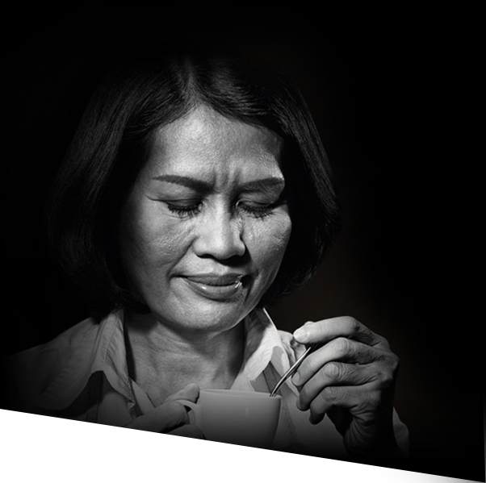
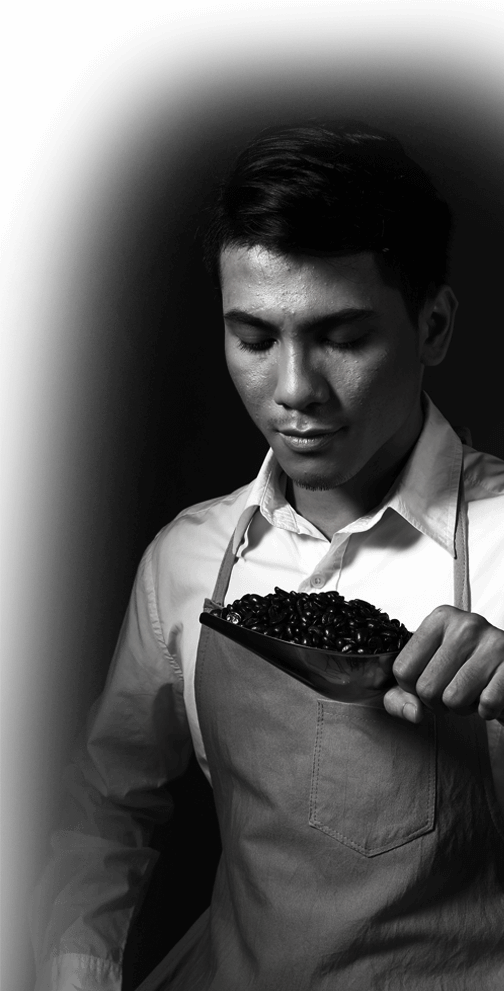
Ấp ủ từ năm 1968 với
ĐAM MÊ VÀ TẬN TÂM
KHÔNG
NGỪNG NGHỈ
Cả đời sống và thấu hiểu đến tận cùng về cà phê Việt Nam, những nghệ nhân của chúng tôi yêu chất đậm đà của cà phê rang xay, đam mê hương vị nguyên bản nồng nàn trong từng giọt cà phê phin sánh đậm và khao khát tạo ra một phong cách trải nghiệm hoàn toàn mới.
Khám phá
thêm
thêm
Để tạo nên tuyệt tác
Một vị ngon
nguyên bản
Trong mỗi viên rang xay CAFÉ
DE NAM từ
Vinacafé là sự lưu giữ trọn vẹn hương vị tứ quý “thơm– đen – đậm
– đắng” với 100% cà phê nguyên chất.
Từng giọt cà phê sóng sánh một sắc nâu đen quen thuộc. Lớp bọt mịn quyến rũ mời gọi ngay từ
cái nhìn đầu tiên. Một hương thơm nồng nàn lan tỏa bừng dậy khứu giác.
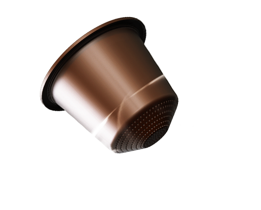
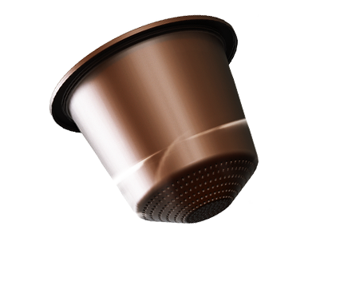
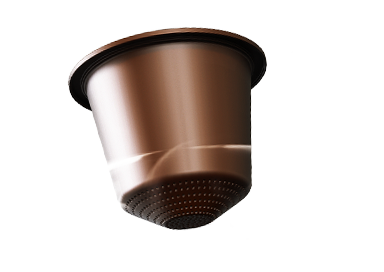
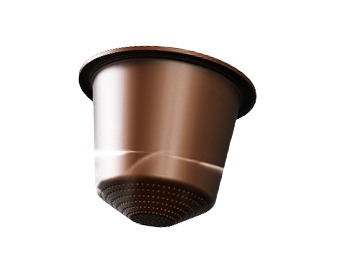
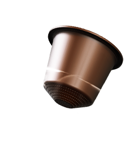
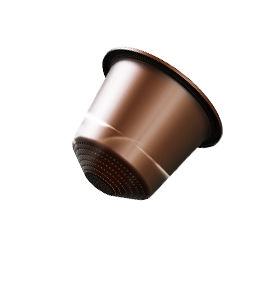
Bấm vào đây
 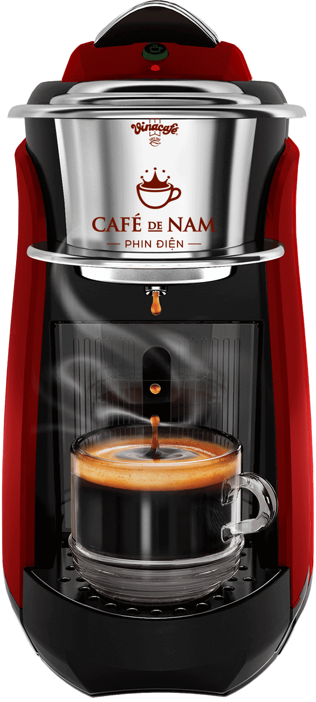
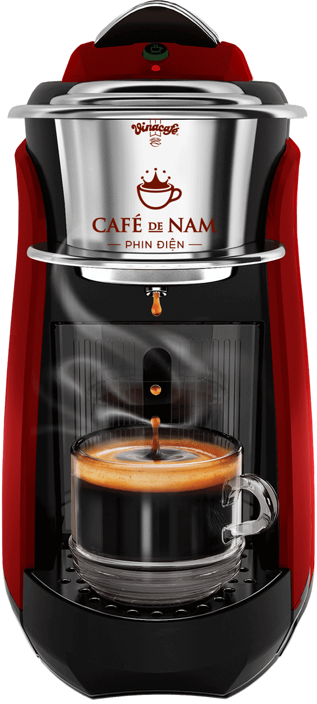
Với phong cách thưởng thức hoàn toàn mới
MỘT NÚT BẤM
THĂNG
HOA
TRẢI NGHIỆM
Chỉ cần cho 1 viên rang xay CAFÉ
DE NAM vào Phin
Điện, bấm một nút duy nhất, bạn sẽ có ngay ly cà phê 100% nguyên chất, vẹn tròn hương vị
nguyên bản, đậm ngon đúng chất pha phin kiểu Việt.
Phin Điện CAFÉ DE
NAM dựa trên công nghệ cà phê pha máy hiện đại của thế giới kết hợp với bí quyết pha phin
độc đáo của Việt Nam.
Tìm quán
thử ngay
thử ngay
Đó là kết tinh của sự giao thoa
TRUYỀN THỐNG VÀ HIỆN ĐẠI
Phin Điện CAFÉ DE NAM là sự kết hợp hoàn hảo giữa chất lượng và sự tiện lợi để mang đến ly cà phê đậm đà bản sắc Việt với tên gọi VIETNAMO, cho hàng triệu người yêu cà phê Việt Nam trên thế giới được thưởng thức mỗi ngày, như tôi, như bạn.
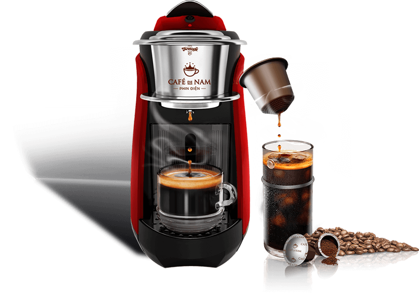